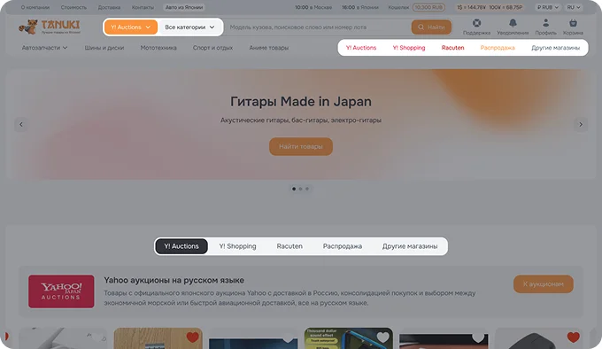
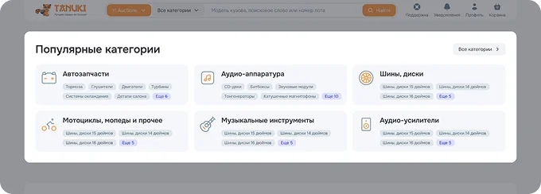
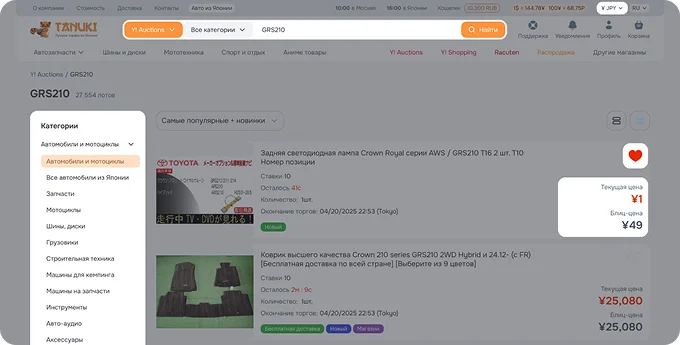
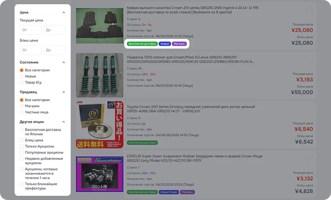

Поиск товара
Шаг 1. Выберите, где искать
На сайте доступны:
- Yahoo Auctions — крупнейший японский онлайн-аукцион, где можно сделать ставку и купить новый или подержанный товар по выгодной цене. Продавцы: как магазины, так и частные лица.
- Yahoo Shopping и Rakuten, и другие — японские интернет-магазины с новыми товарами.
Вы можете переключаться между платформами с помощью:
- выпадающего списка (в поиске),
- либо вкладок под строкой поиска.

Шаг 2. Используйте строку поиска
- Введите название товара в строку поиска.
- Система подскажет категории и ключевые слова.
- Выберите нужную категорию из выпадающего списка.
Шаг 3. Поиск по категориям
На главной странице представлены популярные категории — вы можете начать с них, если хотите просто посмотреть ассортимент.
⚠️ Учтите: категории на аукционе и в магазинах отличаются, поэтому, если не нашли нужное — попробуйте сменить источник поиска (например, с аукциона на Rakuten).

Шаг 4. Поиск с помощью сотрудников
Если не удаётся найти товар самостоятельно, обратитесь в поддержку — специалисты Tanukishop подберут товар за вас.

Шаг 5. Поиск автозапчастей по кузову
- Для автотоваров лучше использовать поиск по кузову:
- Введите модель кузова автомобиля (например, AZT240) в строку поиска.
- Перейдите в категорию «Автомобили и мотоциклы» → «Запчасти».
- Уточняйте нужную категорию запчастей — поиск по кузову сохранится.
Вы можете свободно переключаться между аукционами и магазинами — поисковый запрос сохраняется.
Шаг 6. Настройте сортировку результатов
Вы можете сортировать товары по:
- цене;
- времени окончания аукциона;
- истории ставок;
- другим параметрам.
Шаг 7. Измените вид отображения
Есть два режима:
- Плитка (сетка) — больше товаров на экране.
- Список (строки) — больше информации о каждом товаре (продавец, состояние, доставка и т.д.).
Шаг 8. Выбор валюты
Вы можете переключать валюту отображения цен:
- ₽ — Российский рубль
- ¥ — Японская иена
- $ — Доллар США
- € — Евро
- 元 — Юань
Шаг 9. Понимание цен
- Текущая цена — ставка, достигнутая в аукционе на данный момент.
- Блиц-цена — цена, по которой можно сразу купить товар, не участвуя в
торгах.
После покупки по блиц-цене аукцион завершается.
Шаг 10. Добавление в избранное
Нажмите на сердце возле товара — он добавится в список отслеживания.
В личном кабинете вы сможете следить за ставками и статусами этих лотов.
Шаг 11. Фильтрация товаров
В режиме списка вы можете увидеть:
- Кто продавец (Магазин или частное лицо),
- Есть ли бесплатная доставка по Японии,
- Новый ли товар.
По этим и другим параметрам можно фильтровать товары в левой части страницы.

Шаг 12. Обратите внимание на качество перевода
Названия и описания товаров переведены автоматически — возможны ошибки или некорректные формулировки.
Если что-то непонятно:
Обратитесь в поддержку Tanukishop.
Наши специалисты знают японский язык и смогут:
- уточнить описание;
- перевести текст точно;
- задать вопрос продавцу.